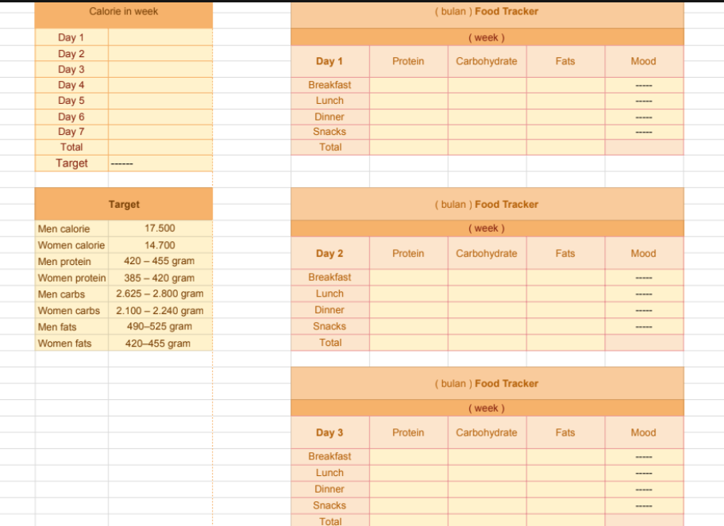

About Our Project
Our project consists of three differently themed
spreadsheet trackers that aim
to aid users in tracking their sleep,
diet, and screen-time in order to fix problems
such as irregular sleep,
an unhealthy diet and too much screentime. Our trackers
were built for
you to organise your data clearly and cleanly. We hope this project
succeeds
in helping users live a healthier life.
How it Can Help
A way of cleanly organising your data to lead a healthier life. A lot of people want to start living healthier but cant keep count of their sleep, calories and screen time. By using these trackers, people can not only keep track of their progress but also see the patterns in their progress and how much they've improved. A healthy life starts with organising.
Example of Our Spreadsheets
